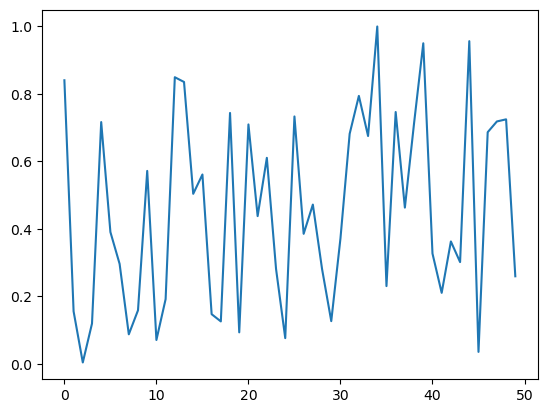

import torchMatrix and tensor
Matrix and tensor
Initial Checks
torch.cuda.is_available()TrueMatrix multiplication from foundations
from pathlib import Path
import pickle, gzip, math, os, time, shutil, matplotlib as mpl, matplotlib.pyplot as pltGet data
MNIST_URL = 'https://github.com/mnielsen/neural-networks-and-deep-learning/blob/master/data/mnist.pkl.gz?raw=true'
path_data = Path('Data')
path_data.mkdir(exist_ok = True)
path_gz = path_data/'mnist.pkl.gz'path_gzPosixPath('Data/mnist.pkl.gz')from urllib.request import urlretrieve
if not path_gz.exists(): urlretrieve(MNIST_URL, path_gz)with gzip.open(path_gz, 'rb') as f: ((x_train, y_train), (x_valid, y_valid), _) = pickle.load(f, encoding = 'latin-1')lst1 = list(x_train[0])
vals = lst1[200:210]
vals[0.0,
0.0,
0.0,
0.19140625,
0.9296875,
0.98828125,
0.98828125,
0.98828125,
0.98828125,
0.98828125]def chunks(x, sz):
for i in range(0, len(x), sz):
yield x[i:i+sz]list(chunks(vals, 5))[[0.0, 0.0, 0.0, 0.19140625, 0.9296875],
[0.98828125, 0.98828125, 0.98828125, 0.98828125, 0.98828125]]mpl.rcParams['image.cmap'] = 'gray'
plt.imshow(list(chunks(lst1, 28)));
from itertools import isliceit = iter(vals)
islice(it, 5)<itertools.islice>next(it)0.0isit = islice(it,5)next(isit)0.0list(islice(it, 5))[0.0, 0.19140625, 0.9296875, 0.98828125, 0.98828125]it= iter(lst1)
img = list(iter(lambda: list(islice(it,28)), []))plt.imshow(img);
Matrix and tensor
img[20][15]0.98828125class Matrix:
def __init__(self, xs):
self.xs = xs
def __getitem__(self, idxs):
return self.xs[idxs[0]][idxs[1]]m = Matrix(img)
m[20, 15]0.98828125import torch
from torch import tensortensor([1,2,3])tensor([1, 2, 3])tens = tensor(img)
tens[20,15]tensor(0.9883)x_train, y_train, x_valid, y_valid = map(tensor, (x_train, y_train, x_valid, y_valid))
x_train.shapetorch.Size([50000, 784])x_valid.shapetorch.Size([10000, 784])x_train.type()'torch.FloatTensor'imgs = x_train.reshape((-1, 28, 28))
imgs.shapetorch.Size([50000, 28, 28])plt.imshow(imgs[0])<matplotlib.image.AxesImage>
imgs[0, 20, 15]tensor(0.9883)x_train.shapetorch.Size([50000, 784])n,c = x_train.shape
y_train, y_train.shape(tensor([5, 0, 4, ..., 8, 4, 8]), torch.Size([50000]))min(y_train), max(y_train)(tensor(0), tensor(9))y_train.min(), y_train.max()(tensor(0), tensor(9))Random Numbers
Based on the Wichmann Hill Algorithm used before Python 2.3
rnd_state = None
def seed(a):
global rnd_state
a, x = divmod(a, 30268)
a, y = divmod(a, 30306)
a, z = divmod(a, 30322)
rnd_state = int(x)+1, int(y)+1, int(z)+1seed(457428938475)
rnd_state(4976, 20238, 499)def rand():
global rnd_state
x, y, z = rnd_state
x = (171 * x) % 30269
y = (172 * y) % 30307
z = (170 * z) % 30323
rnd_state = x,y,z
return (x/30269 + y/30307 + z/30323) % 1.0rand(),rand(),rand()(0.7645251082582081, 0.7920889799553945, 0.06912886811267205)if os.fork(): print(f'In parent: {rand()}')
else:
print(f'In child: {rand()}')
os._exit(os.EX_OK)In parent: 0.9559050644103264
In child: 0.9559050644103264if os.fork(): print(f'In parent: {torch.rand(1)}')
else:
print(f'In child: {torch.rand(1)}')
os._exit(os.EX_OK)In parent: tensor([0.5075])
In child: tensor([0.5075])plt.plot([rand() for _ in range(50)]);
plt.hist([rand() for _ in range(10000)]);
2.35 ms ± 118 µs per loop (mean ± std. dev. of 7 runs, 10 loops each)The slowest run took 5.33 times longer than the fastest. This could mean that an intermediate result is being cached.
63 µs ± 52.7 µs per loop (mean ± std. dev. of 7 runs, 10 loops each)Matrix Multiplication
torch.manual_seed(1)
weights = torch.randn(784,10)
bias = torch.zeros(10)m1 = x_valid[:5]
m2 = weightsm1.shape, m2.shape(torch.Size([5, 784]), torch.Size([784, 10]))ar, ac = m1.shape
br, bc = m2.shape
(ar,ac),(br,bc)((5, 784), (784, 10))t1 = torch.zeros(ar, bc)
t1.shapetorch.Size([5, 10])for i in range(ar):
for j in range(bc):
for k in range(ac):
t1[i,j] += m1[i,k] * m2 [k, j]t1tensor([[-10.9417, -0.6844, -7.0038, -4.0066, -2.0857, -3.3588, 3.9127,
-3.4375, -11.4696, -2.1153],
[ 14.5430, 5.9977, 2.8914, -4.0777, 6.5914, -14.7383, -9.2787,
2.1577, -15.2772, -2.6758],
[ 2.2204, -3.2171, -4.7988, -6.0453, 14.1661, -8.9824, -4.7922,
-5.4446, -20.6758, 13.5657],
[ -6.7097, 8.8998, -7.4611, -7.8966, 2.6994, -4.7260, -11.0278,
-12.9776, -6.4443, 3.6376],
[ -2.4444, -6.4034, -2.3984, -9.0371, 11.1772, -5.7724, -8.9214,
-3.7862, -8.9827, 5.2797]])t1.shapetorch.Size([5, 10])torch.set_printoptions(precision = 2, linewidth = 140, sci_mode = False)import numpy as np
np.set_printoptions(precision = 2, linewidth = 140)def matmul(a, b):
ar, ac = a.shape
br, bc = b.shape
(ar,ac),(br,bc)
t1 = torch.zeros(ar, bc)
t1.shape
for i in range(ar): #5
for j in range(bc): #10
for k in range(ac): #784
t1[i,j] += m1[i,k] * m2 [k, j]
return t1615 ms ± 13.8 ms per loop (mean ± std. dev. of 7 runs, 1 loop each)ar * bc * ac39200Numba
from numba import njit@njit
def dot(a,b):
res = 0.
for i in range(len(a)): res+=a[i]*b[i]
return resfrom numpy import arraydef matmul(a, b):
(ar,ac),(br,bc) = a.shape, b.shape
t1 = torch.zeros(ar, bc)
t1.shape
for i in range(ar): #5
for j in range(bc):
t1[i,j] = dot(a[i,:], b[:, j])
#for k in range(ac): #784
# t1[i,j] += m1[i,k] * m2 [k, j]
return t1m1a, m2a = m1.numpy(), m2.numpy()from fastcore.test import *test_close(t1, matmul(m1a, m2a))a = [10 ,6 ,4]
b = [2, 8, 7]
a1 = np.array(a)
b1 = np.array(b)
a1 + b1a2 = tensor(a)
b2 = tensor(b)
a2 + b2(a2 < b2).float().mean()m = tensor([[1,2,3],[4,5,6],[7,8,9]])
m\[\| A \|_F = \left( \sum_{i,j=1}^n | a_{ij} |^2 \right)^{1/2}\]
sf = (m*m).sum()
sfsf.sqrt()m[2, :], m[:,2]m[2]def matmul(a, b):
(ar,ac),(br,bc) = a.shape, b.shape
t1 = torch.zeros(ar, bc)
for i in range(ar): #5
for j in range(bc):
t1[i,j] = (a[i,:] * b[:, j]).sum()
return t1test_close(t1, matmul(m1, m2))def matmul(a, b):
(ar,ac),(br,bc) = a.shape, b.shape
t1 = torch.zeros(ar, bc)
for i in range(ar): #5
for j in range(bc):
t1[i,j] = torch.dot(a[i,:], b[:, j])
return t1test_close(t1, matmul(m1, m2))Broadcasting with a scalar
a2a2 > 0a2 + 1ma2Broadcasting a vector to a matrix
c = tensor([10.,20, 30]);cmm.shape, c.shapec+ mt = c.expand_as(m)tt.untyped_storage()t.stride(), t.shapec.unsqueeze(0), c[None, :]m[:,:, None]c.shape, c.unsqueeze(0).shapec.unsqueeze(1), c[: ,None]c.shape, c.unsqueeze(1).shapec[None].shape, c[...,None].shapec[: ,None].expand_as(m)m + c[:, None]m + c[None, :]c[None, :] * c[:, None]c[None, :] > c[:, None]cm * mMatmul with broadcasting
digit = m1[0]
digit.shape, m2.shapedigit[:,None].shapedigit[:,None].expand_as(m2).shape(digit[:,None]* m2).shapedef matmul(a, b):
(ar,ac),(br,bc) = a.shape, b.shape
t1 = torch.zeros(ar, bc)
for i in range(ar): #5
for j in range(bc): #10
# t1[i,j] = (a[i,:] * b[:, j]).sum()
# t1[i,j] = torch.dot(a[i,:], b[:, j])
t1[i] = (a[i, :, None] * b).sum(dim = 0)
return t1test_close(t1, matmul(m1, m2))result=matmul(m1, m2)
resulttr = matmul(x_train, weights)
tr.shape,trEinstein Summation
einsumis a compact representation for combining products and sums in a general way.
m1.shape, m2.shapemr = torch.einsum('ik,kj->ikj',m1,m2)
mr.shapemr.sum(1)mr = torch.einsum('ik,kj->ij',m1,m2)def matmul(a, b): return torch.einsum('ik,kj->ij',a,b)test_close(tr, matmul(x_train, weights), eps=1e-3)pytorch op
test_close(tr, x_train@weights, eps=1e-3)CUDA
!conda list | grep cudatoolkitdef matmul(grid, a, b, c):
i, j = grid
if i < c.shape[0] and j < c.shape[1]:
tmp = 0.
for k in range(a.shape[1]):
tmp += a[i, k] * b[k, j]
c[i, j] = tmpres = torch.zeros(ar,bc)
matmul((0,0), m1, m2, res)
resdef launch_kernel(kernel, grid_x, grid_y, *args, **kwargs):
for i in range(grid_x):
for j in range(grid_y):
kernel((i, j), *args, **kwargs)res = torch.zeros(ar, bc)
launch_kernel(matmul, ar, bc, m1, m2, res)
resfrom numba import cuda@cuda.jit
def matmul(a,b,c):
i, j = cuda.grid(2)
if i < c.shape[0] and j < c.shape[1]:
tmp = 0.
for k in range(a.shape[1]):
tmp += a[i, k] * b[k, j]
c[i, j] = tmpr = np.zeros(tr.shape)
#m1g, m2g, rg = cuda.to_device(x_train), cuda.to_device(weights), cuda.to_device(r)m1g, m2g, rg = map(cuda.to_device, (x_train, weights, r))m1g, m1g.shapeTPB = 16
rr, rc = r.shape
blockspergrid = (math.ceil(rr / TPB), math.ceil(rc / TPB))
blockspergridmatmul[blockspergrid, (TPB, TPB)](m1g, m2g, rg)r = rg.copy_to_host()
test_close(tr, r, eps=1e-3)matmul[blockspergrid, (TPB, TPB)](m1g, m2g, rg)
r = rg.copy_to_host()m1c, m2c = x_train.cuda(), weights.cuda()
m1gpu, m2gpu = m1.cuda(), m2.cuda()cpu() copys from GPU to CPU
r = (m1c @ m2c).cpu()r, r.shapeimport gc
import torch
torch.cuda.empty_cache()
gc.collect()import ctypes
libc = ctypes.CDLL("libc.so.6") # clearing cache
libc.malloc_trim(0)for name in dir():
if not name.startswith('_'):
del globals()[name]Clustering
Clustering techniques are unsupervised learning algorithms that try to group unlabelled data into “clusters”, using the (typically spatial) structure of the data itself.
import math, matplotlib.pyplot as plt, operator, torch
from functools import partialtorch.manual_seed(42)
torch.set_printoptions(precision = 3, linewidth = 140, sci_mode = False)Create data
n_clusters= 6
n_samples = 250
centroids = torch.rand(n_clusters, 2) * 70 - 35
centroidsfrom torch.distributions.multivariate_normal import MultivariateNormal
from torch import tensordef sample(m):
return MultivariateNormal(m,
torch.diag(tensor([5.,5.]))).sample((n_samples,))slices = [sample(c) for c in centroids]
data = torch.cat(slices)
data.shapedef plot_data(centroids, data, n_samples, ax = None):
if ax is None: _,ax = plt.subplots()
for i, centroid in enumerate(centroids):
samples = data[i * n_samples:(i + 1) * n_samples]
ax.scatter(samples[:,0], samples[:,1], s = 1)
ax.plot(*centroid, markersize=10, marker = "x", color='k', mew = 5)
ax.plot(*centroid, markersize=5, marker= "x", color = 'm', mew = 2)plot_data(centroids, data, n_samples)Mean shift
midp = data.mean(0)
midpplot_data([midp]*6, data, n_samples)def gaussian(d, bw):
return torch.exp(-0.5*((d/bw))**2) / (bw * math.sqrt(2*math.pi))def plot_func(f):
x = torch.linspace(0, 10, 100)
plt.plot(x, f(x))plot_func(partial(gaussian, bw=2.5))f = partial(gaussian, bw=2.5)f(tensor(4.))def tri(d, i): return (-d + i).clamp_min(0)/iplot_func(partial(tri, i = 8))X = data.clone()
x = data[0]
xx.shape, X.shape, x[None].shape(x- X)[:8]dist = torch.einsum('ik->i',((x - X) ** 2))
dist.sqrt()dist = ((x - X) ** 2).sum(1).sqrt()
distweight = gaussian(dist, 2.5)
weight[:8]weight.shape,weight[:,None].shape, X.shapeweight[:,None] * Xdef one_update(X):
for i, x in enumerate(X):
dist = torch.einsum('ik->i',((x - X) ** 2))
weight = gaussian(dist, 2.5)
X[i] = (weight[:, None] * X).sum(0)/weight.sum()def meanshift(data):
X = data.clone()
for it in range(5): one_update(X)
return Xplot_data(centroids+2, X, n_samples)Animation
from matplotlib.animation import FuncAnimation
from IPython.display import HTMLdef do_one(d):
if d: one_update(X)
ax.clear()
plot_data(centroids+2, X, n_samples, ax = ax)X = data.clone()
fig, ax = plt.subplots()
ani = FuncAnimation(fig, do_one, frames = 5, interval=500, repeat=False)
plt.close()
HTML(ani.to_jshtml())GPU batched algorithm
bs = 5
X = data.clone()
x = X[:bs]
x.shape, X.shapedef dist_b(a, b):
return (((a[None] -b[:,None])**2).sum(2)).sqrt()dist_b(X,x)dist_b(X,x).shapeX[None,:].shape, x[:,None].shape, (X[None, :] - x[:, None]).shapegaussian??weight = gaussian(dist_b(X,x),2)weight.shape, X.shapeweight[..., None].shape, x[None].shapenum = (weight[...,None] * X[None]).sum(1)
num.shapenumtorch.einsum('ij,jk ->ik', weight, X)weight@Xdiv = weight.sum(1, keepdim = True)
div.shapenum/divbs = 5def meanshift(data, bs = 500):
n = len(data)
X = data.clone()
for it in range(5):
for i in range(0, n, bs):
s = slice(i, min(i+bs, n))
weight = gaussian(dist_b(X, X[s]), 2.5)
div = weight.sum(1, keepdim = True)
X[s] = weight@X/div
return Xdata = data.cuda()X = meanshift(data,bs).cpu()plot_data(centroids+2, X, n_samples)